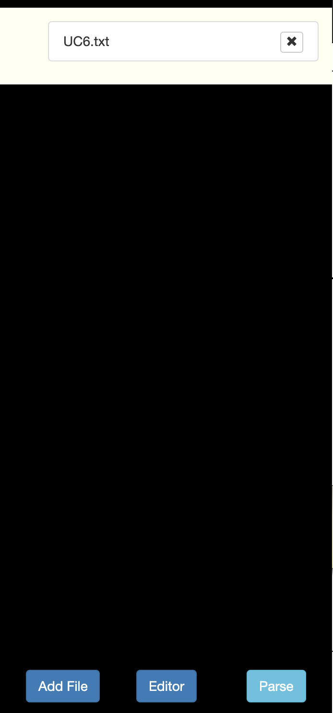
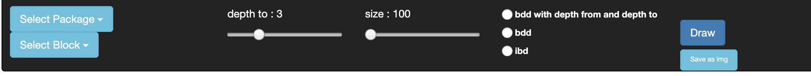

Open the side menu to select the files to use, or open the editor for writing a smaller example
When the side menu is closed all the files will be parsed. If no error alert show up, then the packages
should be visible in the top menu.

In the top menu one can select which package to use, and which block to use as a starting point.
The depth and the size of the boxes can be selected using the sliders.
Then there are three opinons for the diagram type. Two are BDDs and one IBD.
One of the BDD diagrams will use two depth values and only draw the blocks that are in the range.

The fourth option for drawing the diagram is to select 'ALL' when selecting the block.
This will draw all the blocks as a BDD.
It is possible to Zoom in on the diagram using the scroll wheel. It is also possible to move the diagram
by clicking and dragging.
Hovering over a block will show a information box of the block.
Clicking on a block will draw a new diagram, with the active settings in the top menu and with the clicked block
as the starting point.
A frame containing blocks, value types and abstract blocks
package << name >> {
<< package content here>>
}
empty block:
block << name >>;
block with content:
block << name >> {
<< block content here >>
}
empty abstract block:
abstract block << name >>;
abstract block with content:
abstract block << name >> {
<< block content here >>
}
For a block to inherit an abstract block use the ":>"
block << name >> :> << Name of block to inherit from >>;
The block can override inherited parts by assigning a new part and use the same part name.
value type << name >> {
<< values here >>
}
For adding a value to a block
<< name >> :> << Type >>;
For making a reference to a value type
value << name >> : << value_type >> [<< amount >>];
part << name >> : << block >> [<< amount >>];
It is possible to assign a part that references a block defined in another package. In that case the "::" should be used.
part << name >> : << package_name >>::<< block >> [<< amount >>];
ref << name >> : << block >> [<< amount >>];
link : << relation_name >> connect << part_name_1 >> to << part_name_2 >>;
It is possible to assign the link to a part of the part using '::'.
link : << rel_name >> connect << part_of_block_name >>::<< part_name >> to << part_name_2 >>;
Note that the part must have been defined before they are referenced.